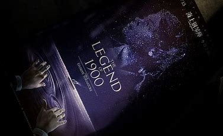

海上钢琴师
意大利1998年朱塞佩·托纳托雷执导电影
《海上钢琴师》是由朱塞佩·托纳托雷执导，蒂姆·罗斯、比尔·努恩、梅兰尼·蒂埃里主演的剧情片
，于1998年10月28日在意大利上映。该片改编自亚利桑德罗·巴里克文学剧本《1900：独白》
，讲述了一个被命名为“1900”的弃婴在一艘远洋客轮上与钢琴结缘，成为钢琴大师的传奇故事
。该片4K修复版于2019年11月15日在中国内地上映
>>>

主要
演员
蒂姆·罗斯
比尔·努恩
梅兰尼·蒂埃里
目录
基本信息
《海上钢琴师》是由朱塞佩·托纳托雷执导，蒂姆·罗斯、比尔·努恩、梅兰尼·蒂埃里主演的剧情片，
于1998年10月28日在意大利上映。
该片4K修复版于2019年11月15日在中国内地上映。
| 中文名 |
海上钢琴师 |
主 演 |
蒂姆·罗斯、比尔·努恩、梅兰尼·蒂埃里 |
| 外文名 |
The Legend of 1900 |
片 长 |
165分钟（剪切版：125分钟） |
| 其他译名 |
海上钢琴师1900、声光伴我飞、一九零零的传奇 |
上映时间 |
1998年10月28日（意大利）；2019年11月15日(中国内地) |
| 类 型 |
剧情、音乐 |
|
|
| 制片地区 |
意大利 |
对白语言 |
英语、法语、意大利语 |
| 导 演 |
吉赛贝·托纳多雷 |
色 彩 |
彩色 |
| 编 剧 |
吉赛贝·托纳多雷、亚利桑德罗·巴里克 |
电影分级 |
Rated R |
剧情简介
1900年的第一天，往返于欧美两地的邮轮Virginian号上，负责邮轮上添加煤炭的工人丹尼·博德曼（比尔·努恩饰）在头等舱上欲捡拾有钱人残留下来的食物时，却意外的在钢琴上发现一个被遗弃的新生儿，装在TD牌柠檬的空纸箱内。由于坚信“TD”正代表了Thanks Danny的缩写，于是丹尼不顾其他工人的嘲笑，独立抚育这个婴儿，并为了纪念这特别的一天，将他取名为：1900。
海上出生的1900（蒂姆·罗斯饰），在陆地上却是个从未存在的人，没有亲人、没有户籍，也没有国籍，大海便是他的摇篮，而他也随着Virginian号往返靠泊各个码头，逐渐长大。然而好景不常，一次的海上意外事件，造成抚养1900的丹尼意外丧生，幸而奇迹似的，某天深夜船上的众人被优美的琴声所惊醒，循着琴声而往，居然是无师自通的1900在钢琴前忘我的演奏着，动人的旋律打动了众人，从此，1900展开了在海上弹奏钢琴的旅程，也吸引了愈来愈多慕名而来的旅客。
马克斯（普路特·泰勒·文斯饰）在因缘际会下来到Virginian号加入乐队伴奏，也因此见识到这位传说中的海上钢琴师1900，两人因此结为好友。而1900在与发明爵士乐的传奇钢琴手杰利同船竞技钢琴琴艺之后，声势更是如日中天。但尽管马克斯再三鼓励1900下船去向全世界展露他的天赋，1900却始终未曾踏足陆地一步。直到他在为唱片公司录制个人专辑时，意外见到船舱之外清秀动人的女孩，并在感动之余创作了《1900's Theme》。随着女孩的下船离去，1900的心开始波动
幕后花絮
- 片中轮船的外观设计灵感来自于卢西塔尼亚号及其姐妹毛里塔尼亚号。1900弹钢琴的舞厅有着跟毛里塔尼亚号相似的圆形屋顶。
- 拍摄《海上钢琴师》使蒂姆平生第一次访问意大利，说服他的并不是托纳多雷，而是那部独白剧《1900：独白》，这个讲述无名钢琴家的虚构故事打动了他。
- 虽然蒂姆·罗斯本来不会弹钢琴，但经过拍片前半年的魔鬼特训后应该是学会了。片子里对1900弹琴时手部的拍摄镜头充分说明了那是蒂姆·罗斯自己的手（他的手指不长）。要知道做到“形似”对初学者来说已经是很不容易了。
- 由于中途曾一度中止，剧组花了110天的时间用于拍摄。在罗马搭建了19处外景，奥德萨11处。45名演员。75名工作人员。10000名群众演员。2500套服装。弗吉尼亚号使用的是一艘165米长的俄国退役舰艇。
- 在乌克兰时，由于环境恶劣，语言不通，对剧本的分歧，加之两人脾气都不好，蒂姆与托纳托雷一度只在万不得已时才同对方讲话，剧组移师罗马以后，他们的关系融洽了许多：旁观者描述他们像好朋友一样亲密。